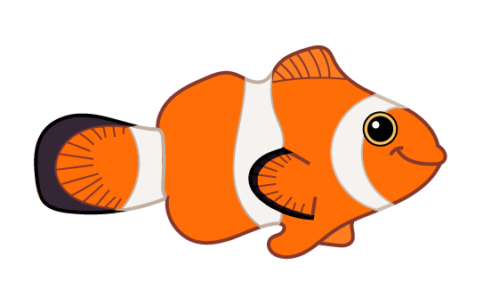
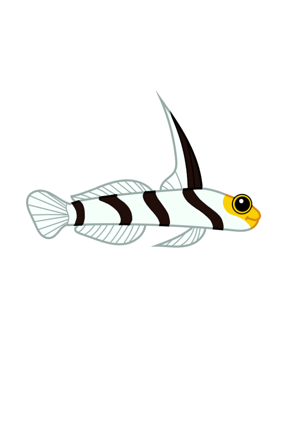
 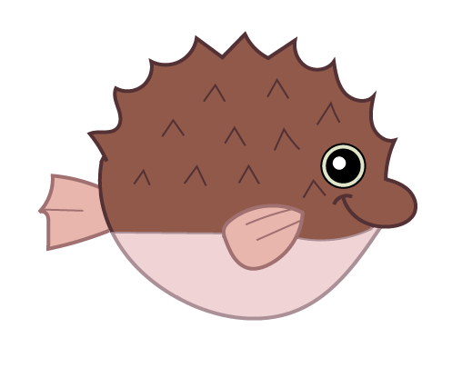
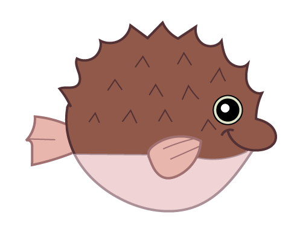

 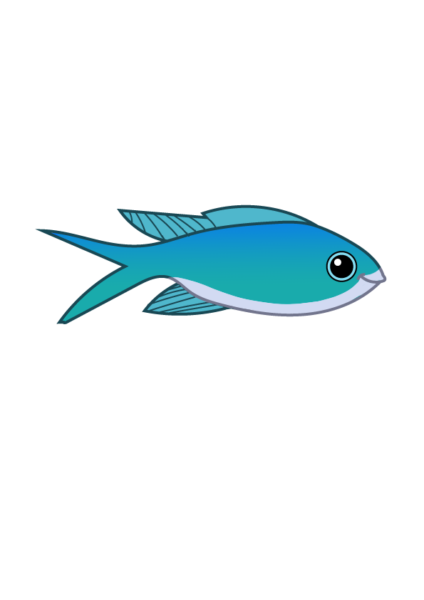
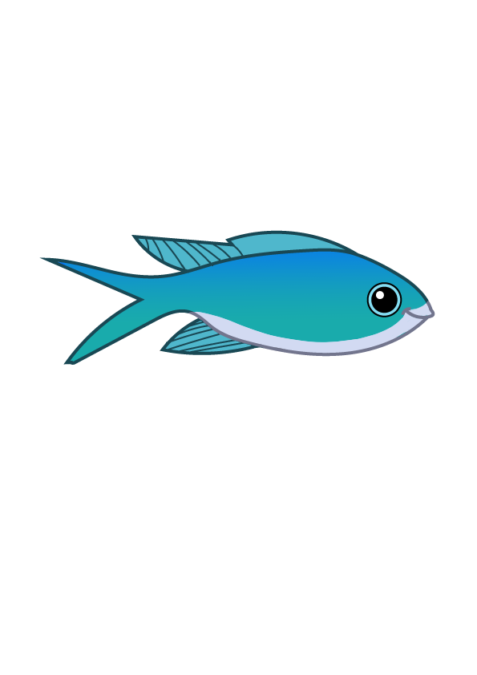
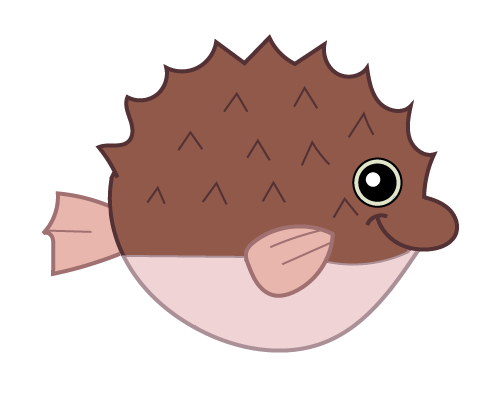
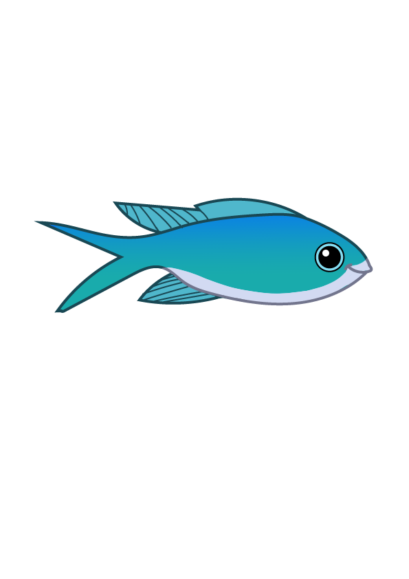
Klik på mig!
Hej med jer!
Velkommen til akvariet i Storcenter Nord.
Her i akvariet kan i finde mine venner der svømmer rundt bag mig. Du
kan klikke på mine fiske-venner for at lære mere om dem.
Kan du for eksempel finde min orange klovnfiske-ven?
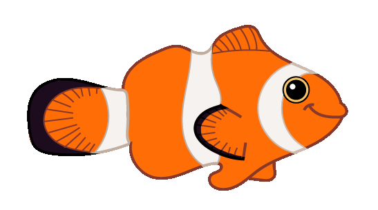
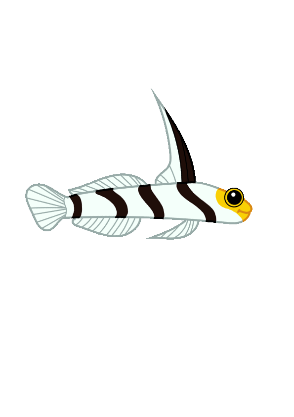
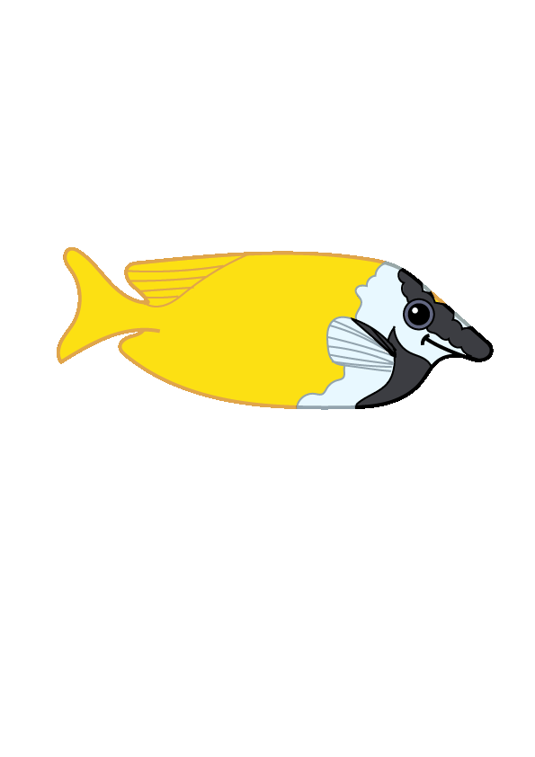
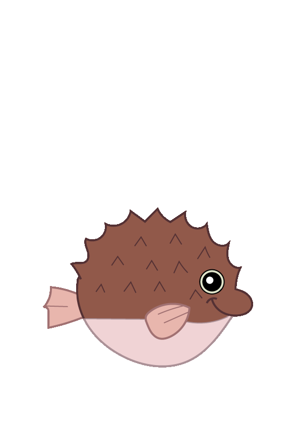
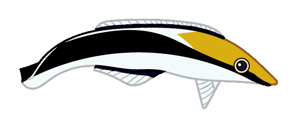
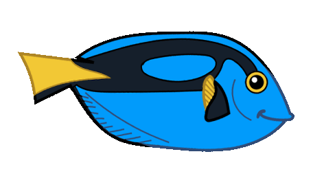
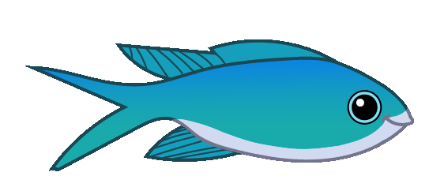